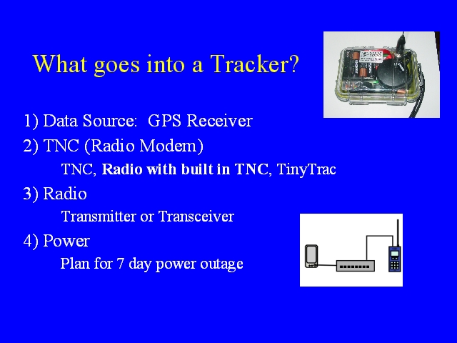

Notes:
A tracking station, a tracker, incorporates a GPS receiver, a TNC that is capable of converting the raw position information produced by the GPS into APRS packets, a radio transmitter, and a power supply. For disaster purposes, planning for all APRS equipment should include plans for managing power over a three day long power outage.